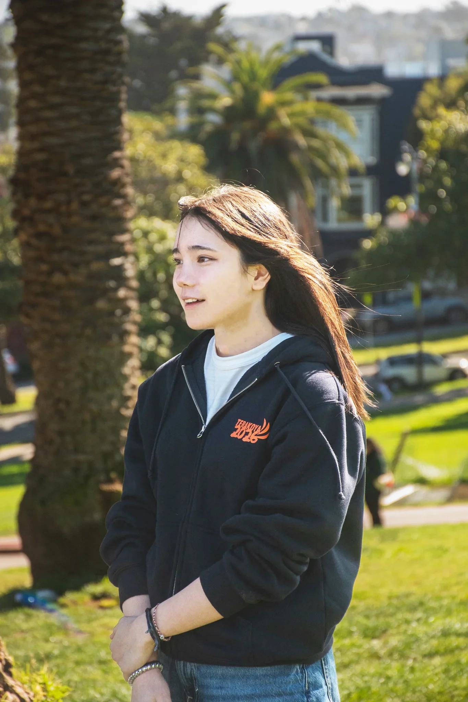

挑戦は、
次の挑戦へ。
高校生・大学生の海外挑戦を、
月1,000円から支える。
挑戦の循環をつくる、最初の100人へ。
現在
0/100人
あと62人
\ 月1,000円から若者の挑戦を支える /
最初の100人として参加する

高校生・大学生の海外挑戦を、
月1,000円から支える。
挑戦の循環をつくる、最初の100人へ。
その一歩は、支援者の寄付から始まった。

羽田空港でアメリカという国を想像して心躍った。
はっきり言葉にしないと伝わらない。ここでは全て自分の行動次第なのだと気づいた。
アンケートの回答数を見て、初めて自信がついた。興味分野である探求の面白さを知った。

最終日、互いに涙してバディと感謝を伝えあった。
「世界は思っていたより
近かった。」
帰国後、進路が明確に定まった。
なんでもやってみる精神を培った。
スタッフとしてもEdFutureに参加。
そして今、EdFuture Founding Partners 100の一人に。
「今度は自分が
挑戦する人を応援したい」

EdFuture Founding Partners 100は、「挑戦が次の挑戦を生む社会」を広げる最初の100人を集めるプロジェクトです。
私たちが目指すのは、挑戦の機会を得た人がその経験を社会に還元し、次の世代の挑戦を支えていく「挑戦の循環」です。これまで184名の若者の背中を押してきましたが、地方にいたから、お金がなかったから、不登校だったから——など、挑戦できない理由は人それぞれです。そんな若者たちの「やってみたい」をEdFutureは後押しします。
日本の教育の現実
生まれた環境が、挑戦の数を決めている。
11.5%
子どもの相対的貧困率
44.5%
ひとり親世帯の貧困率
29.9%
低所得家庭の体験ゼロ率
2.6倍
高所得と低所得の体験格差
17歳以下の子どもの相対的貧困率は11.5%、ひとり親世帯では44.5%に上ります。低所得家庭では体験ゼロの子どもが29.9%と、高所得家庭の2.6倍。経済的な余裕のなさが、複数の格差に連鎖しています。
出典：厚生労働省「2022年国民生活基礎調査」／こども家庭庁「令和6年版こども白書」
子どもに体験をさせてあげられなかった理由で最も多いのは「経済的な余裕がない」（年収300万未満56.3%／600万以上16.9%）。ただし「時間的な余裕がない」は51.5%／47.7%と所得にかかわらず約半数が挙げており、機会格差の原因はお金だけではありません。
出典：チャンス・フォー・チルドレン「体験格差実態調査」2023年7月
高校卒業後に大学・短大へ進学する割合は、都道府県によって京都73%・全国平均61%・沖縄50%と差があります。生まれ育った場所によって、その先に進める選択肢の数そのものが変わってしまうのが現実です。
出典：文部科学省「令和6年度学校基本調査」／内閣府「地域課題分析レポート2024年秋号」
費用・地域・経験の壁を取り払い、
すべての若者に「挑戦の入口」を届けます。
経済的・手続き的ハードルを最小限にし、現地学生とのバディ制度によるリアルな異文化交流を通じて探究型学習とグローバルな視点を育む短期海外留学プログラム。参加者は国際的な現場を舞台に自らの問いに挑み、将来の進路選択にもつながるインスピレーションを得られます。
ワールド寺子屋留学プログラムでは、様々な事情のある若者が「海外へ一歩踏みだす」ことを後押しするため、奨学金制度を設けています。頂いたご寄付は、プログラム運営費として、渡航費・現地での学び・事前事後のサポートなど、若者の挑戦に必要な機会づくりに100%活用されます。


ワールド寺子屋 2023 / サンフランシスコ
高校最後の春、経済的な理由で一度は諦めた留学に挑戦することができました。海外経験だけなく、「自分にも挑戦できる」という自信と、切磋琢磨しながら応援し合える仲間を得ました。参加後はEdFutureスタッフとして挑戦を支える側になりました。その後、トビタテ留学JAPANの制度を活用し、デンマークに長期留学、今はインドネシアで国連インターンに参加しています。海外経験も英語力もなかった私の最初の一歩を後押ししてくださった皆さんに心から感謝しています。
Hanon さん（高校3年生・東京都）
ワールド寺子屋 2025 / サンフランシスコ
「お金がないから海外なんて無理。」そう思っていた私の背中を押してくれたのがEd Futureでした。経済的な理由で夢を諦めかけていた自分が、勇気を出して一歩踏み出せたのは、その支えのおかげです。サンフランシスコで出会った人々や文化、景色、そして触れた新しい価値観は、今も私の大切な財産で、挑戦を続ける原動力になっています。プログラム終了後は、地元北海道で会社を企業し、挑戦し続けてます。次は自分が、誰かの背中を押せる存在になりたいです。
Shun さん（高校2年生・北海道）
アイルランドプログラム 2025
「地方に住んでいると、海外は遠い夢だと思っていた。奨学金があったから参加できた。この経験は一生の宝物。次は私が誰かの背中を押せる人になりたい。」
R.T. さん（大学1年生・秋田県）

232人
プログラム参加者数
60%
が海外初体験
36都道府県
から参加


次の挑戦者を迎えたい
この秋、グローバルプロジェクトの10月募集が始まります。来年度はアイルランドプログラムも構想中。奨学金制度（地方枠・無料枠）を整え、次の挑戦者を迎える準備をしています。
学生1人の、
「渡航前の事前研修」
海外が初めての高校生が、事前研修を受けることで安心して渡航準備ができます。
学生1人の、
「渡航先での10日間の活動費用」
高校生が、渡航先で名門大学や一流企業の訪問を通して、学びを深めることができます。
学生1人の、
「渡航前の事前研修と渡航先での10日間の活動費用」まで丸ごと全て
一人の高校生の、渡航準備から現地での学びまで、まるごと可能になります。

保護者・新潟県・50代
「息子が帰国したとき、別人のように目が輝いていました。あの経験を、次の子にも届けたい。その一心で支援を始めました。」

公立高校教員・沖縄県
泉川さん
沖縄県で教員をする中で、子どもの貧困や体験格差をリアルに感じる場面が多くありました。離島の高校生は交通費や宿泊費の都合で大会に参加できないこともあります。
そんなとき県外の研修で海外の教育現場の取り組みを知り、「子どもたちに海外に行って見てきたものを持ち帰ってもらう方がいいのでは」と思いました。その研修で出会ったのが代表の中村さんで、体験格差の解消を本気で目指す姿勢に強く共感しました。同じ志を持つ方と、この寄付を通じて繋がれたら嬉しいです。

ワールド寺子屋 卒業生・大学生
吉田さん
アルバイトで少しお金を自由に使えるようになったとき、ふと考えました。この出費は、自分の時間や体力を犠牲にして得たお金を使うに値するのか、と。そのとき、自分に投資できないなら、他の人に使ってもらいたいと思ったのが、寄付を考えたきっかけでした。EdFutureに寄付しようと思ったのは、参加者として本当に成長できたこと、そして自分も同じように応援していただいたからです。
いずれはすべての学生にこの取り組みを届けてほしいという思いを込めて、支援を続けています。
Founding Partners限定
参加者・スタッフ・寄付者が集うコミュニティへご招待。活動報告、参加者の声、メンバー同士の交流ができます。

プログラムの裏側、参加者の変化、スタッフの挑戦をお届けします。

参加者・卒業生と直接交流できる年に一度の報告会にご参加いただけます。

支援が届いた若者たちから、直接感謝のメッセージが届きます。

一般的な投資は元本とリターンが切り離れています。EdFutureの場合は、支援された若者が将来「支える側」に回ります。投資が次の投資を生む。これがEdFutureにしかない「社会的複利」です。
EdFutureが届けているのは、若者の挑戦の機会だけではありません。
団体自身も挑戦の途中にあります。
特例認定NPO法人の取得を目指し、初めて100人の支援者を集める挑戦を実施し、達成しました
特例認定NPO法人の審査中
特例認定の先にある、認定NPO法人の取得を目指しています
特例認定、そして認定NPO法人へ。認定NPO法人になると寄付者の税金が控除され、より寄付者が寄付をしやすい体制を整えることができます。
これは、若者に「やってみたい」を「やってみた」に変えてほしいと願うEdFuture自身が、同じように一歩ずつ挑戦を重ねている証です。
認定NPO法人では、パブリックサポートテストという寄付者が毎年100人いることが継続の条件になります。
EdFuture Founding Partners 100になっていただくと、EdFutureの挑戦も応援して頂けることになります。
はい、いつでも解約・停止が可能です。手続きはメールでお気軽にご連絡ください。
はい、単発のご寄付も受け付けております。フォームよりご選択ください。
ご寄付後に領収書を発行いたします。
現時点では、EdFutureはまだ認定NPO法人ではないため、寄付金は税制上の控除の対象にはなりません。いま私たちは、寄付者の税金が控除される「認定NPO法人」を目指して活動しています。その認定には、寄付者が毎年100人いることが条件のひとつになります。つまり、いまFounding Partnersになっていただくことは、若者の挑戦だけでなく、控除を実現しようとするEdFuture自身の挑戦を後押しする応援にもなります。
もちろんです。100人が月1,000円を継続することで、年間120万円の安定した支援基盤となります。小さな一歩が、大きな挑戦を生みます。
いただいた寄付は100%をプログラム活動費（奨学金・渡航費補助・学習支援）に充てています。詳細は年次活動報告書でご確認いただけます。
ニュースレターや活動報告、イベントを通じて、参加者やプログラムの様子をお届けします。Founding Partners限定のSlackコミュニティでもリアルタイムで情報を共有しています。